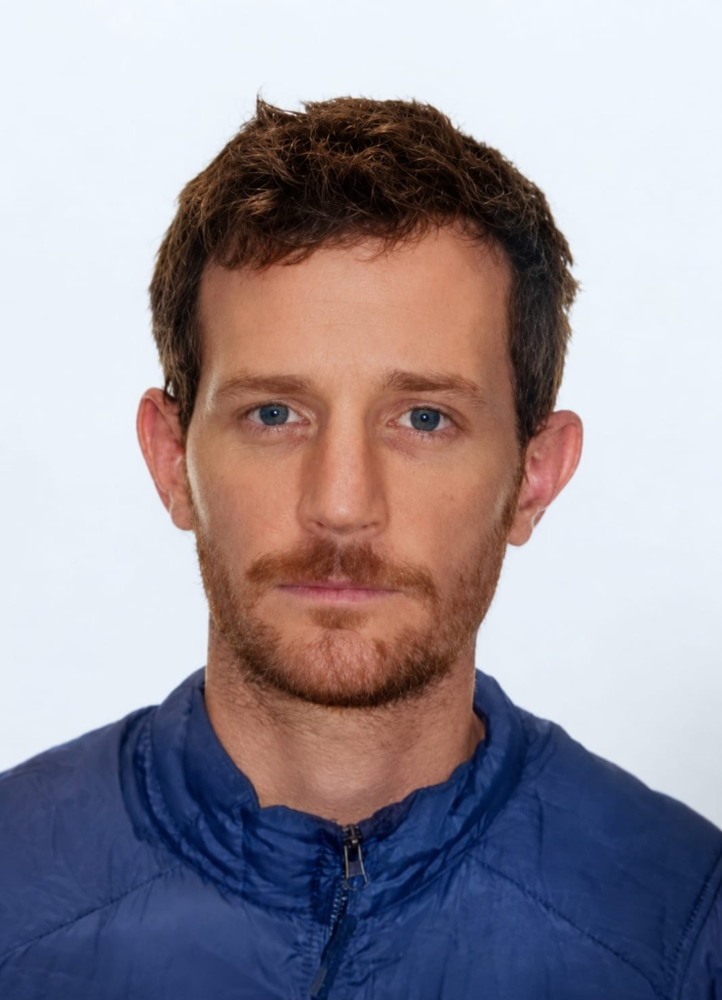
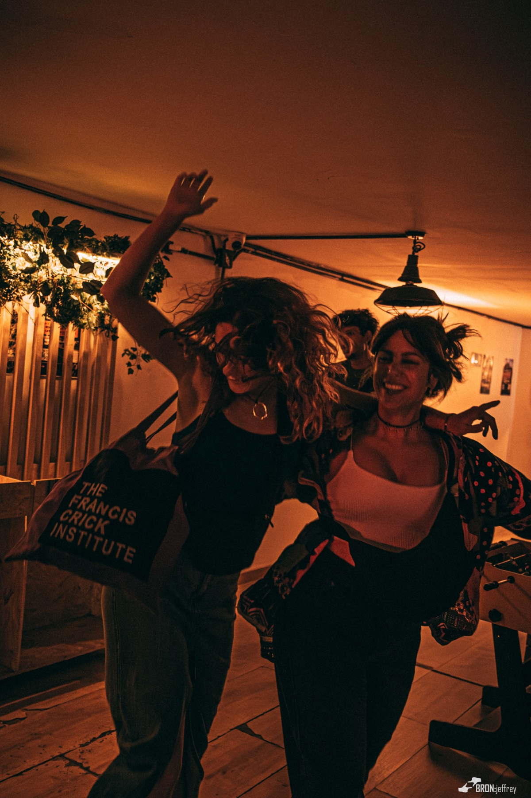

Mapa de processoProcess map
Mapa de processoProcess mapComo o Airfryer Collective How Airfryer Collective funciona.works.
Barcelona. Um dia de semana. Um DJ. Uma sala cheia de gente que ama música. Este documento descreve como isso acontece de verdade, do primeiro contato com o DJ até o vídeo no ar.Barcelona. A weeknight. One DJ. A room full of people who love music. This document describes how that actually happens, from first contact with the DJ to the video going live.
São dois processos. As sessões na living room, que acontecem desde 2025. E os eventos fora de casa, que começaram em 2026 com o Bridge 48 e o Salva Discos. Os dois alimentam a mesma máquina de conteúdo.There are two workflows. The living room sessions, running since 2025. And the events outside the house, which started in 2026 with Bridge 48 and Salva Discos. Both feed the same content engine.
Isto é uma descrição, não uma proposta.This is a description, not a proposal.
Airfryer Collective
O ColetivoThe Collective
Um coletivo de música em Barcelona. As sessões acontecem na minha living room, e recebemos DJs do mundo inteiro.A music collective in Barcelona. The sessions happen in my living room, and we host DJs from all over the world.
A ideia é juntar pessoas que amam música de verdade, e dar ao DJ a sala como laboratório dele.The idea is to bring together people who really love music, and to give the DJ the room as their lab.
Ninguém sabe qual DJ vai tocar até o grupo ser criado, 24 horas antes. O DJ tem liberdade total para explorar o que quiser: o que escuta, o que o inspira, o que está produzindo. Normalmente as coisas que ele não consegue tocar quando está abrindo ou fechando para um nome grande.Nobody knows which DJ is playing until the group is created, 24 hours before. The DJ has full freedom to explore whatever they want: what they listen to, what inspires them, what they're producing. Normally the things they can't play when they're opening or closing for a big name.
As sessões são gravadas e editadas depois, para o DJ ter aquilo como conteúdo próprio, e para quem esteve lá ter o vídeo como memória da noite.Sessions are recorded and edited afterwards, so the DJ has it as their own content, and the people who came have the video as a memory of the night.
- SalaRoomA minha living room, em BarcelonaMy living room, in Barcelona
- TamanhoSize15 a 25 pessoas, circulando15 to 25 people, circulating
- Quem convidaWho invitesMetade nossa, metade do DJ. Se o DJ não for de Barcelona, cuidamos da lista inteiraHalf ours, half the DJ's. If the DJ isn't from Barcelona, we cover the whole list
- DiaDayDia de semana, na maioria das vezesWeekdays, mostly
- HorárioHours19h – 22h
- Primeira horaFirst hourEncontro. As pessoas se conhecem, conhecem o DJ, tomam uma cervejaGathering. People meet each other and the DJ, have a beer
- SetComeça por volta das 20h–20h30 e vai até as 22hStarts around 20h–20h30, runs to 22h
- DepoisAfterAs pessoas ficam mais um pouco conversando, tomam a última, e vão emboraPeople stay a bit longer to talk, have a final drink, then head home
- BYOBCada um traz o que vai beberEveryone brings what they'll drink
Vão na mensagem do grupo antes de toda sessão.These go out in the group message before every session.

O timeThe team
Somos quatro. Todo mundo tem emprego. O coletivo roda ao lado disso.There are four of us. Everyone has a day job. The collective runs alongside that.



Os númerosThe numbers
Média de 100 curtidas por post. Reels entre 5 e 10 mil views. 110 inscritos no YouTube. Nunca usamos anúncios, com pouquíssimas exceções. Para 2026 a meta é 22 sessões, e 15 já aconteceram. Entre os nomes que já tocaram com a gente: Entropia, Leo Janeiro e Seed Selector.Around 100 likes per post. Reels between 5 and 10 thousand views. 110 YouTube subscribers. We have never used ads, with very few exceptions. The 2026 target is 22 sessions, and 15 have happened. Among the names who have played with us: Entropia, Leo Janeiro and Seed Selector.
Uma série que começou em 2026, explorando lugares fora de casa. Duas até agora.A series that started in 2026, exploring places outside the house. Two so far.
Bridge 48, 24 de maio. Clique para ver em tamanho original.Bridge 48, May 24. Click any photo to see it full size.


A sessão na living roomThe living room session
Sete passos, do primeiro contato com o DJ até o vídeo no ar.Seven steps, from first contact with the DJ to the video going live.
Existem três caminhos de entrada:There are three ways in:
- Indicação.Recommendation. O mais comum. Alguém da rede sugere um DJ.The most common. Someone in the network suggests a DJ.
- Inbound.Inbound. O DJ viu o projeto e escreve.The DJ saw the project and writes.
- Outbound.Outbound. A gente vê alguém tocando, gosta do som, pega o contato e escreve na hora.We see someone playing, like the sound, get the contact and write right after.
Depois explicamos o conceito e mandamos o Instagram, o site e o canal do YouTube.Then we explain the concept and share the Instagram, the website and the YouTube channel.
O que a gente pede:What we ask for: o SoundCloud, um press kit, ou qualquer set gravado que a pessoa tenha.their SoundCloud, a press kit, or any recorded set they have.
Combinamos um dia de semana com o DJ.We agree a weekday with the DJ.
A gente não planeja com muita antecedência. Deixamos a agenda aberta de propósito, porque aparecem DJs o tempo todo e queremos poder dizer sim quando alguém surge.We don't plan far ahead. We keep the schedule open on purpose, because DJs come up all the time and we want to be able to say yes when someone appears.
Convidamos a nossa metade, do círculo próximo. Falamos com as pessoas diretamente e pegamos a confirmação, explicando o conceito no caminho. Normalmente 2 ou 3 acabam desistindo, e isso já entra na conta.We invite our half, from our inner circle. We talk to people directly and get their confirmation, explaining the concept along the way. Normally 2 or 3 end up bailing, and that's factored in.
Do lado do DJ:The DJ's side: ele pode trazer até 10 pessoas. Se não conseguir preencher, a gente cobre o resto.they can bring up to 10 people. If they can't fill that, we cover the rest.
24 horas antes, o grupo de WhatsApp é criado. É esse o momento em que o DJ é revelado. Até aqui, ninguém sabe quem vai tocar.24 hours before, the WhatsApp group is created. This is the moment the DJ is revealed. Until now, nobody knows who's playing.
Todos os grupos de sessão ficam dentro da nossa comunidade, então quem entra em um grupo é automaticamente adicionado à comunidade.All session groups sit inside our community, so anyone who joins a group is automatically added to the community.
Mandamos uma mensagem template, customizada com os links do DJ, explicando como a noite funciona. Ela cobre: boas-vindas e quem toca, o Instagram e o SoundCloud do DJ, um convite para seguir o @airfryer_collective, os horários, as regras da casa, o aviso de que estamos gravando, e o pedido para dançar.We send a template message, customised with the DJ's links, explaining how the night works. It covers: welcome and who's playing, the DJ's Instagram and SoundCloud, a prompt to follow @airfryer_collective, the timings, the house rules, the note that we're recording, and the ask to dance.
As pessoas já começam a se engajar no grupo.People start engaging in the group straight away.
19h. A primeira hora é para as pessoas se conhecerem, conhecerem o DJ, e tomarem uma cerveja.The first hour is for people to meet each other and the DJ, and have a beer.
Por volta das 20h–20h30.Around 20h–20h30. Alguns minutos antes do set começar, chamamos a atenção de todo mundo. Explicamos o que é o coletivo e damos algumas dicas para aproveitar melhor: fica longe do celular, se quiser conversar desce, este é um momento para dançar e para se conectar.A few minutes before the set starts, we get everyone's attention. We explain what the collective is and give some tips for enjoying it: stay off the phone, if you want to talk go downstairs, this is a moment for dancing and connecting.
O setThe set vai até as 22h.runs until 22h.
Gravação:Recording: três câmeras. Uma GoPro aberta, funcionando como câmera de segurança. Uma na CDJ. E uma enquadrando o DJ e o público.three cameras. A wide GoPro, acting like a security camera. One on the CDJs. And one framing the DJ and the crowd.
Algum conteúdo é capturado para o Instagram na hora, mas de leve. Todo mundo está dançando, e não é esse o foco.Some content is captured for Instagram in the moment, but lightly. Everyone is dancing, and that isn't the focus.
Depois das 22h,After 22h, as pessoas ficam mais um pouco conversando, tomam a última, e vão para casa.people stay a while longer to talk, have a final drink, and head home.
- Subir os vídeosUpload the videos
- Mandar para o editorSend to the editor
- A edição começaEditing starts
Hoje a edição está sendo feita de graça.The editing is currently being done for free.
A publicação é feita em lote.Releases are batched. A gente espera ter 4 ou 5 vídeos editados antes de começar a postar, para a cadência se manter firme depois que começa.We wait until 4 or 5 videos are edited before starting to post, so the cadence holds steady once it starts.
Os vídeos saem na quinta-feira, às 19h.Videos go out on Thursday at 19h.
Na semana anterior a cada vídeo:The week before each video:
- Revisar o vídeo editadoReview the edited video
- Cortar 3 a 5 reels/shorts deleCut 3 to 5 reels/shorts from it
- Se teve fotógrafo na sessão, selecionar fotos para intercalar com os shortsIf there was a photographer, select photos to intercut with the shorts
- Produzir o conteúdo do Instagram, a descrição do YouTube e a mensagem da comunidade, com apoio dos agentes e revisão depoisProduce the Instagram content, the YouTube description and the community message, drafted with agents and reviewed after
- Validar tudo com o DJValidate everything with the DJ
Com tudo validado, o post sai em collab com o DJ, e com o venue quando faz sentido. Os posts de sessão não são impulsionados.Once validated, the post goes out as a collab with the DJ, and with the venue where relevant. Session posts are not boosted.
Entre os lançamentos de sessão não existe uma linha de conteúdo separada. Para a sessão do Seed Selector está previsto um making of. A comunidade no WhatsApp recebe um set por semana.Between session releases there is no separate content stream. A making-of is planned for the Seed Selector session. The WhatsApp community receives one set per week.
Quatro sessões gravadas na living room.Four sessions recorded in the living room.
Leavin’ the Room
Os eventos fora de casa. Dois já aconteceram, e começaram em direções opostas: o Bridge 48 nos convidou, e o Salva Discos veio do dossiê que enviamos. O resto do processo foi parecido, em escalas diferentes.The events outside the house. Two have happened, and they started in opposite directions: Bridge 48 invited us, and Salva Discos came from the dossier we sent. The rest of the process was similar, at different scales.
Inbound. O venue nos procura.The venue approaches us.
Outbound. Mandamos um dossiê, um documento explicando o que é o coletivo, o formato, os números, o que os DJs falam sobre a experiência, e o que o venue ganha com isso. O Salva Discos confirmou no dia seguinte ao recebimento.We send a dossier, a document explaining what the collective is, the format, the numbers, what DJs say about it, and what the venue gets out of it. Salva Discos confirmed the day after receiving it.
O dossiê é feito como página web bilíngue mais um PDF para impressão, e é reaproveitável para outros venues.The dossier is produced as a bilingual web page plus a print PDF, and is reusable for other venues.
O modelo.The model. Nós trazemos as pessoas e vendemos os ingressos. O venue fica com o bar.We bring the people and sell the tickets. The venue runs the bar.
O dinheiro.The money. A receita dos ingressos vem inteira para o coletivo, menos a taxa do Resident Advisor. O bar é o retorno do venue. O Bridge 48 cedeu o espaço de graça.Ticket revenue comes to the collective in full, minus the Resident Advisor cut. The bar is the venue's return. Bridge 48 gave the space for free.
Data, capacidade, salas, line up, horários e faixas de ingresso. O line up não segue um padrão, é montado de acordo com a necessidade e o clima da noite.Date, capacity, rooms, lineup, set times and ticket tiers. The lineup follows no standard, it's built according to the needs and the vibe of the night.
O Bridge 48 como referência:Bridge 48 as the reference: domingo, 18h às 22h30, capacidade 150, equipamento do venue (os DJs levam só o USB). Duas salas, o Airfryer na principal e a Mahouse na lab. Às 21h a lab fecha e todo mundo se junta na sala principal para o set de encerramento.Sunday, 18h to 22h30, capacity 150, equipment provided by the venue (DJs bring USBs only). Two rooms, Airfryer in the main one and Mahouse in the lab. At 21h the lab closes and everyone joins the main room for the closing set.
Ingressos pelo Resident Advisor, em quatro faixas liberadas em sequência:Tickets through Resident Advisor, in four tiers released in sequence:
| FaixaTier | Preço / QtdPrice / Qty |
|---|---|
| Early Bird | €7 · 30 |
| 1st Release | €10 · 50 |
| 2nd Release | €12 · 40 |
| I Support — com brinde surpresa, disponível o tempo todo— with a surprise gift, available throughout | €15 · 20 |
| Reserva — guest list e portaReserve — guest list and door | 10 |
A inscrição no RA é gratuita e aprovada em 24 horas. No Salva Discos não usamos a faixa I Support.Submitting the RA listing is free and approved within 24 hours. At Salva Discos we didn't use the I Support tier.
Antes do anúncio, pedimos o press kit de cada artista. É de lá que sai o material para o flyer, o listing do RA e os posts.Before announcement, we ask each artist for their press kit. That's where the material for the flyer, the RA listing and the posts comes from.
- Save the dateSave-the-date
- Flyer do eventoEvent flyer
- Listing no RARA listing
- Cards de compartilhamento, um por artista, no formato de story para eles repostaremShare cards, one per artist, in story format for them to repost
- Reel de anúncioAnnouncement reel
De onde vem a imagem.Where the imagery comes from. Do press kit dos DJs, mais fotos reais tiradas com a crew, nada de banco de imagem. As fotos ganham um movimento leve para virar story e reel.From the DJs' press kits, plus real photos taken with the crew, never stock. Stills get light movement for stories and reels.
O evento carrega um nome próprio dentro da série. O Bridge 48 saiu como The Culture Hub × Airfryer Collective: Leavin’ the Room, com os dois logos no flyer e a nossa linguagem visual aplicada à marca do venue.The event carries its own name under the series. Bridge 48 ran as The Culture Hub × Airfryer Collective: Leavin’ the Room, with both logos on the flyer and our visual language applied to the venue's branding.
Mais ou menos cinco semanas, em fases:Roughly five weeks, in phases:
- TeaserSave the date, depois a revelação do venue. Sem line up aindaSave the date, then the venue reveal. No lineup yet
- AnúncioAnnouncementO flyer sai, o link dos ingressos entra no ar, carrossel de line up, reel de anúncio. Todo mundo posta no mesmo diaThe flyer drops, the ticket link goes live, lineup carousel, announcement reel. Everyone posts on the same day
- BuildupSpotlight individual de cada artista, cortes reaproveitados de sessões antigas, bastidores, enquetesIndividual artist spotlights, clips re-cut from past sessions, behind the scenes, polls
- Semana do eventoEvent weekContagem regressiva diária, post de horários, informações práticas, último empurrão de ingressosDaily countdown, timetable post, practical details, last-tickets push
- Dia do eventoEvent dayStories ao vivo durante a noite inteiraLive stories through the night
- Pós-eventoPost-eventCarrossel de agradecimento, reel de recap, reels de momento individuais por artistaThank-you carousel, recap reel, individual moment reels per artist
WhatsApp. Os pushes são enviados como mensagem pessoal, nunca como transmissão. O Bridge 48 usou dois: um com tom de comunidade, outro mais direto na semana final.Pushes are sent as personal messages, never as broadcasts. Bridge 48 used two: one community-toned, one more direct in the final week.
Uma hashtag própriaA branded hashtag é definida para cada evento, para depois conseguir achar e repostar o conteúdo de quem foi. O Bridge 48 usou #AirfryerBridge48.is set for each event, so attendee content can be found and reposted afterwards. Bridge 48 used #AirfryerBridge48.
Três funções são definidas antes da noite, não no dia:Three roles get named before the night, not on the day:
- Porta e leitura de ingressoDoor and ticket scanning
- Pessoa de conteúdo.Content person. Filmando. Não pode ser um dos DJs que vai tocarFilming. Must not be one of the performing DJs
- Montagem e desmontagemSetup and breakdown
O horário de montagem e passagem de som é combinado com o venue antes.Setup and soundcheck timing is agreed with the venue in advance.
Os stories rodam durante a noite inteira, marcando os DJs e o venue.Stories run through the night, tagging the DJs and the venue.
O mesmo motor da living room, só que num arco mais longo.The same engine as the living room, over a longer arc.
O Bridge 48 rodou em 11 semanas: primeiro um vídeo de callout, depois um set por semana, fechando com o aftermovie. Cada semana de release carrega um teaser antes do set, o release em si, uma peça depois apontando para a semana seguinte, um reel, e uma sequência de stories.Bridge 48 ran across 11 weeks: a callout video first, then one set per week, closing with an aftermovie. Each release week carries a teaser before the set, the release itself, a piece afterwards pointing at the following week, a reel, and a stories sequence.
As legendas são escritas em lote,Captions are drafted in batch, para todas as semanas de uma vez, e validadas com cada DJ antes do drop dele.across all the weeks at once, and validated with each DJ before their drop.

Como o conteúdo é feitoHow content gets made
A maior parte do texto é escrita por agentes de IA, e revisada depois. Isto é o que isso quer dizer na prática.Most of the writing is drafted by AI agents, then reviewed. This is what that actually means.
Três exemplos reais, já publicados. Mesmo ciclo de release, três superfícies, três registros diferentes. Estão no original em inglês, como saíram.Three real examples, published. Same release cycle, three surfaces, three different registers. Shown in the original English, as they went out.